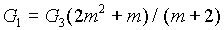
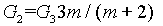
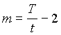
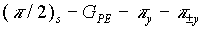
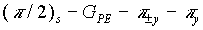
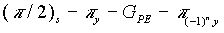
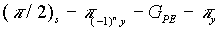
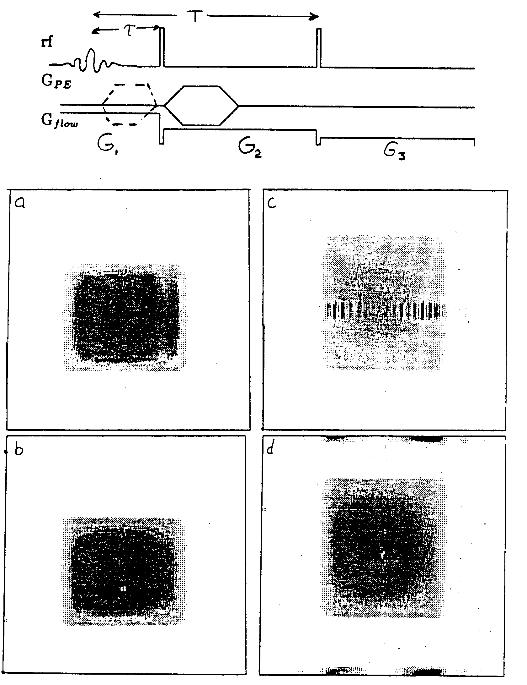

Distortions of Flow Imaging due to Stimulated Echoes.
Dear Dr. Shapiro,
Stimulated echoes (STE; Hahn) hate been the 'focus' of much recent research in NMR imaging because of their interesting T1 and phase dependencies (see Merboldt, et. al., and its references). However, undesired STE's are always present in experiments containing three or more rf pulses (often due to nonideal p refocussing pulses) and they can lead to severe distortion of the image obtained from the second primary spin echo (SE) (Zur and Stokar). One manifestation of the STE it a sinusoidal modulation of the SE image, the frequency of which is inversely proportional to the separation of echoes according to the modulation theorem (Bracewell). Another manifestation is an STE image superimposed on the SE image.
Consider the flow phase-compensating image experiment (Caprihan, et. al.) shown in Fig. 1. In
older to collect the SE in exclusion of the STE, we can vary the timing of the rf pulses to separate the SE and STE temporally. This is easy to accomplish for non-flowing samples, but for flow experiments, the gradient amplitude Gflow during the various intervals must be carefully adjusted to eliminate the velocity dependence. We calculate these gradient values to be

and
where
and t is the time between the first two pulses, T is the interval from the first to the third pulse as defined by Hahn, and G1, G2, G3 are the amplitudes for Gflow, defined in Fig. 1.Another strategy is rf pulse phase cycling to cancel the STE, and involves the alternation of the phase of either p pulse by 180° , i.e.

or
, where GPE is the phase-encoding gradient. However, this requires the repetition and coaddition of each GPE increment at least twice (at least 6 times with QPC) thus possibly increasing the experimental time. Because the modulation effect is prominent even when the STE is very small relative to the SE, this technique requires high reproducibility making electronic drift and sample movement intolerable. Fig. 2a is the transverse projection image of a slice in a tube of water (no flow) using the sequence in Fig. 1. Fig. 2b was obtained using the first phase-cycling scheme listed above and the image modulation is diminished.Finally, the STE image can, in principle, be compressed into one dimension by placing the phase encoding (PE) gradient GPE after the first p pulse where the STE spins will not "see" it, rather than after the p /2 pulse (see Fig. 1). The compressed STE image runs through the center of the image window, but it is a sharp feature, and can be easily accounted for (Fig.·2c)· It can also be shifted to the edges of the window in the PE dimension (Fig. 2d) by alternating either p pulse on alternate PE steps, i.e.,

or
(where n is the PE increment number), because the STE signal is then modulated at the Nyquist frequency, This rf phase-cycling scheme requires no up co-addition of signals, so that the experiment time is not increased. The STE image in Figs. 2c and 2d show a significant width which we tentatively attribute to eddy currents from the GPE pulse which which survive until after the final p pulse. The remaining artifacts are due to quadrature imperfections.Please credit this contribution to the account of Dr. Eiichi Fukushima.
Sincerely,
Paul D. Majors

Figure 1
Figure 2
References
Bracewell, R.N., The Fourier Transform and Its Applications, 2nd ed. revised, McGraw-Hill, New
York, 1986; p.108.
Caprihan, A., Davis, J. G., Altobelli, S. A. and Fukushima, E., Magn. Reson. Med., 3, 352-362, 1986.
Hehn, E.L., Phys. Rev. 80, 580-594 (1950).
Merboldt, Hänicke, and Frahm, J. Magn. Reson. 67, 336 (1986).
Zur, Y., and Stokar, S., J. Magn. Reson. 71, 212-228 (1987).